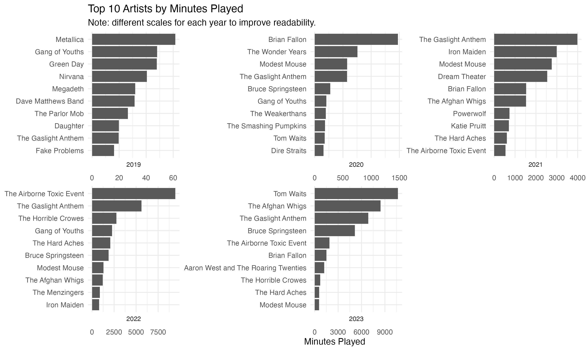
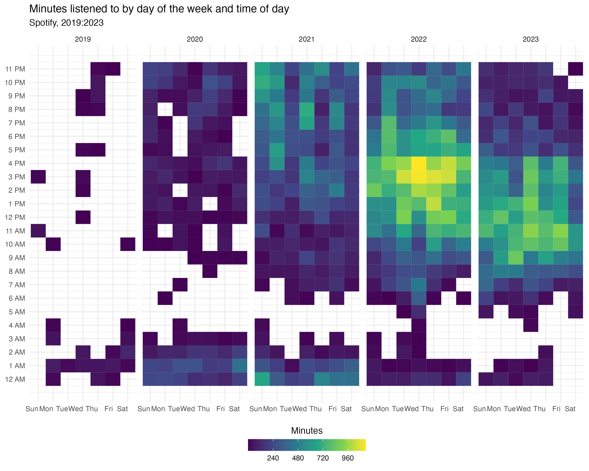

library(arrow, warn.conflicts = FALSE)
library(dplyr)
library(ggplot2)
library(stringr)
library(lubridate)
library(gt)spotify_notes
Spotify Listening History
Every year I get excited for Spotify’s Wrapped just to see the different things they show. As fun as it is, I wanted to explore my data to see if there are any better ways to capture my listening habits. Anyb ody can request their personal data from Spotify on their website. Depending on how much you listen to Spotify, it can take a while to get the data. Mine took around two weeks, but I requested it towards the start of November, and I have a decent amount of data (relative to my friends, anyway).
Prep
I won’t go into much detail about the prep, but will show what I did for reference. Because the data comes in a .json format, I converted it to a .parquet file. I did this to speed up the process in the future since I can then use arrow to read the data in. This works similar to SQL in that it only reads in the data that is needed.
library(jsonlite)
library(dplyr)
library(purrr)
library(glue)
library(arrow)
# Create the 'parq' directory if it doesn't exist
dir.create("data/parq", showWarnings = FALSE, recursive = TRUE)
# creating a list of the file paths
FILE_PATHS <- list.files('data/extended', full.names = TRUE)
FILE_PATHS |>
walk(~{
df <- jsonlite::fromJSON(.x) |>
# removing columns that I do not care about
dplyr::select(-c(username, platform, conn_country:user_agent_decrypted, episode_name:spotify_episode_uri, offline, incognito_mode)) |>
# removing master_metadata_ from column names
dplyr::rename_with(~ gsub('master_metadata_', '', .x))
# Remove the ".json" extension from the output file name
output_file <- gsub("\\.json$", "", basename(.x))
# Write the Parquet file to the 'data/parq' directory
arrow::write_parquet(df, glue::glue('data/parq/{output_file}.parquet'))
})I did this in a way that will create four .parquet files. This essentially simplifies the process moving forward since in the future I can just add another file without having to change any of my previous files. Secondly, it is much faster to deal with the data since I can process it sequentially.
Loading the Data
Now that the data is in a .parquet format, I can load it in using arrow. Arrow allows certain dplyr functions before you load the data onto your memory, which speeds up processing even more since you can reduce the amount of data you are loading. When you want it onto your disk, you use collect(). I created some extra date related columns to simplify certain tasks later on.
df <- open_dataset("data/parq/") |>
select(-c(skipped, offline_timestamp)) |>
# remove any instances where the artist name is NA
filter(!is.na(album_artist_name)) |>
collect() |>
# have to do this after you load it since lubridate doesn't work with arrow
mutate(
# changes the timestamp to a datetime object
# ts is in UTC, keeping this to reference later on
ts = ymd_hms(ts),
year = lubridate::year(ts),
date = lubridate::date(ts),
time = as_datetime(ts, tz = "Australia/Sydney")
)Since this dataset is already clean, we do not have to worry about that, however, there are still steps we can take to get a general understanding before we do anything. For instance, looking at the number of unique artist that I listen to be year:
df |>
group_by(year) |>
summarise(
total_songs = n(),
unique_artists = n_distinct(album_artist_name),
total_minutes = sum(ms_played) / 1000 / 60
) |>
# replace _ with a space, capitalise the first letter of each word
rename_with(~str_to_title(str_replace_all(., "_", " ")), everything()) |>
gt() |>
fmt_number(columns = c(`Total Minutes`), decimals = 2) |>
# add comma to numbers
fmt_number(columns = c(`Total Songs`, `Unique Artists`), decimals = 0) |>
tab_style(
style = cell_text(weight = "bold"),
locations = cells_column_labels()
)| Year | Total Songs | Unique Artists | Total Minutes |
|---|---|---|---|
| 2019 | 593 | 256 | 887.25 |
| 2020 | 5,425 | 1,112 | 10,107.91 |
| 2021 | 10,936 | 1,085 | 34,384.07 |
| 2022 | 18,982 | 1,891 | 63,778.15 |
| 2023 | 13,286 | 555 | 45,948.27 |
While this shows that I listened to more unique artist in 2022, without comparing the total amount of songs I listened to, we do not know if this is because I listened to more songs or if I listened to more unique songs. Next, let’s look at the proportion of unique songs that I listen to by year. For something like this, simply displaying the values as a table is more effective. While plots are useful for displaying features of the data, understanding when to use a table over a plot is quite important. For more, check out this paper by Jonathan Schwabish 1.
df |>
group_by(year) |>
summarise(
n = n(),
n_distinct = n_distinct(spotify_track_uri) / n
) |>
gt() |>
fmt_number(columns = c(n_distinct), decimals = 4) |>
fmt_number(columns = c(n), decimals = 0) |>
tab_style(
style = cell_text(weight = "bold"),
locations = cells_column_labels()
) |>
tab_header(
title = "Proportion of Unique Songs by Year")| Proportion of Unique Songs by Year | ||
| year | n | n_distinct |
|---|---|---|
| 2019 | 593 | 0.8280 |
| 2020 | 5,425 | 0.4640 |
| 2021 | 10,936 | 0.3098 |
| 2022 | 18,982 | 0.2768 |
| 2023 | 13,286 | 0.2485 |
The first two years I was not using Spotify as much, which not only shows why the number of plays was lower, but also why there is higher variance in the proportion of unique songs. From 2021, we see it begin to stabilise. While it is continuing to decrease, my guess is that in 2024 it will increase slightly. While there are many factors at play, a key one is the specific artists I listen to more of in a given year, for example, certain artists have more songs than others.
Instead of looking this on a song level, let’s look at it on an artist level.
df |>
group_by(year) |>
summarise(
total_plays = n(),
unique_artists = n_distinct(album_artist_name)
) |>
mutate(prop_unique_artists = unique_artists / total_plays) |>
rename_with(~str_to_title(str_replace_all(., "_", " ")), everything()) |>
gt() |>
fmt_number(columns = c(`Prop Unique Artists`), decimals = 4) |>
fmt_number(columns = c(`Total Plays`, `Unique Artists`), decimals = 0) |>
cols_label(`Prop Unique Artists` = "Unique Artists %") |>
tab_style(
style = cell_text(weight = "bold"),
locations = cells_column_labels()
) |>
tab_header(
title = md("Proportion of Unique Artists by Year")
)| Proportion of Unique Artists by Year | |||
| Year | Total Plays | Unique Artists | Unique Artists % |
|---|---|---|---|
| 2019 | 593 | 256 | 0.4317 |
| 2020 | 5,425 | 1,112 | 0.2050 |
| 2021 | 10,936 | 1,085 | 0.0992 |
| 2022 | 18,982 | 1,891 | 0.0996 |
| 2023 | 13,286 | 555 | 0.0418 |
This shows a similar pattern to above that I am listening to the same type of music more than I was when I first started using Spotify.
df1 <- df |>
group_by(album_artist_name, year) |>
summarise(
n = n(),
minutes_played = sum(ms_played) / 1000 / 60,
) |>
ungroup() |>
filter(n > 3)
plot1 <- df1 |>
group_by(year) |>
slice_max(minutes_played, n = 10) |>
ungroup() |>
mutate(artist_year = paste(album_artist_name, year, sep = "_")) |>
ggplot(aes(x = reorder(artist_year, minutes_played), y = minutes_played)) +
geom_col() +
facet_wrap(~year, scales = "free", strip.position = "bottom", labeller = label_parsed) +
coord_flip() +
theme_minimal() +
theme(strip.text = element_text(size = 8)) +
scale_x_discrete(labels = function(x) str_replace(x, "_[0-9]+$", "")) +
labs(
x = NULL,
y = "Minutes Played",
title = "Top 10 Artists by Minutes Played",
subtitle = "Note: different scales for each year to improve readability."
)
# ggsave("images/top_artists.jpeg", plot1, width = 10, height = 6, units = "in")
Something that jumps out is that while I listened to 5696 more songs (or 17,830 more minutes) in 2022, the time spent listening to my top artists was higher in 2023, which also explains why the proportion of unique songs was much lower
hour_df <- df |>
mutate(
day = lubridate::wday(date, label = TRUE),
hour = lubridate::hour(time)
) |>
group_by(year, day, hour) |>
summarise(minutes_played = sum(ms_played) / 1000 / 60) |>
ungroup() |>
mutate(
hour_label = ifelse(hour == 0, "12 AM", ifelse(hour <= 12, paste0(hour, " AM"), paste0(hour - 12, " PM"))),
)`summarise()` has grouped output by 'year', 'day'. You can override using the
`.groups` argument.plot2 <- hour_df |>
ggplot(aes(x = day, y = hour, fill = minutes_played)) +
geom_tile() +
scale_fill_viridis_c(breaks = seq(0, 1200, length.out = 6)) +
facet_grid(~year, scales = "free") +
scale_y_continuous(breaks = seq(23, 0, -1), labels = function(x) sprintf("%d %s", ifelse(x %% 12 == 0, 12, x %% 12), ifelse(x < 12, "AM", "PM"))) +
theme_minimal() +
theme(
axis.text.x = element_text(angle = 0, hjust = 1),
legend.position = "bottom"
) +
guides(fill = guide_colorbar(barwidth = 10, barheight = 1, title.position = "top", title.hjust = 0.5)) +
labs(
x = NULL,
y = NULL,
title = "Minutes listened to by day of the week and time of day",
subtitle = "Spotify, 2019:2023",
fill = "Minutes"
)
# ggsave("images/hour_heatmap.jpeg", plot2, width = 10, height = 6, units = "in")
Digging Deeper
Say you want to look at specifics for your songs, you can use the Spotify API. For more details, check the Spotify Documentation or the spotifyr package.
audio_features <- open_dataset('data/audio_features') |>
collect()tmp <- df |>
left_join(audio_features, by = c("spotify_track_uri" = "uri"), relationship = 'many-to-many')
tmp |>
group_by(year) |>
summarise(across(
c(danceability, energy, loudness, speechiness, acousticness, instrumentalness, liveness, valence, tempo), mean)) |>
gt() |>
fmt_number(columns = -year, decimals = 2) |>
tab_style(
style = cell_text(weight = "bold"),
locations = cells_column_labels()
)| year | danceability | energy | loudness | speechiness | acousticness | instrumentalness | liveness | valence | tempo |
|---|---|---|---|---|---|---|---|---|---|
| 2019 | 0.48 | 0.70 | −7.47 | 0.06 | 0.22 | 0.11 | 0.20 | 0.45 | 124.20 |
| 2020 | 0.47 | 0.62 | −8.09 | 0.06 | 0.32 | 0.09 | 0.18 | 0.41 | 122.90 |
| 2021 | 0.45 | 0.69 | −7.42 | 0.06 | 0.22 | 0.14 | 0.20 | 0.41 | 123.39 |
| 2022 | 0.48 | 0.65 | −7.89 | 0.06 | 0.25 | 0.15 | 0.20 | 0.40 | 124.28 |
| 2023 | 0.46 | 0.63 | −8.91 | 0.07 | 0.33 | 0.09 | 0.24 | 0.44 | 120.95 |
Interestingly, there is not much difference here from year to year.
top_40_artist <- df |>
group_by(album_artist_name) |>
summarise(n = n()) |>
arrange(desc(n)) |>
mutate(rank = row_number()) |>
filter(rank <= 40) |>
pull(album_artist_name)
df |>
filter(album_artist_name %in% top_40_artist) |>
# get number of albums by each artist
group_by(album_artist_name) |>
summarise(
n = n(),
n_albums = n_distinct(album_album_name),
n_songs = n_distinct(track_name)
) |>
arrange(desc(n_albums)) # A tibble: 40 × 4
album_artist_name n n_albums n_songs
<chr> <int> <int> <int>
1 Bruce Springsteen 1935 58 551
2 Frank Zappa 146 49 101
3 Buckethead 154 40 72
4 Tom Waits 3215 40 460
5 Iron Maiden 999 32 163
6 Modest Mouse 1544 25 174
7 Frank Turner 179 24 57
8 The Wonder Years 839 24 109
9 Dream Theater 577 21 127
10 Gang of Youths 733 21 56
# ℹ 30 more rowsPlots
What will get interesting here is that your most played songs or artist in terms of play count might not be the most amount of time listened to an artist. This can be due to length of songs, or the variety of songs for a specific artist. For example, The Horrible Crows only have 2 albums, so their tracks get a much higher play count than other songs even if most years they are not in my top 5.
10 Most Played Artists
df |>
group_by(album_artist_name) |>
summarise(
n = n(),
minutes_played = sum(ms_played) / 1000 / 60
) |>
ungroup() |>
slice_max(n, n = 10) |>
ggplot(aes(x = reorder(album_artist_name, n), y = n)) +
geom_col() +
coord_flip() +
scale_y_continuous(breaks = seq(0, 6000, 1000)) +
theme_minimal() +
labs(
x = NULL,
y = "Play Count",
title = "Top 10 Most Played Artists",
subtitle = "Spotify, 2019:2023"
)
10 Most Listened to Artists (by time)
df |>
group_by(album_artist_name) |>
summarise(
n = n(),
minutes_played = sum(ms_played) / 1000 / 60
) |>
ungroup() |>
slice_max(minutes_played, n = 10) |>
ggplot(aes(x = reorder(album_artist_name, minutes_played), y = minutes_played)) +
geom_col() +
coord_flip() +
scale_y_continuous(breaks = seq(0, 20000, 1000)) +
theme_minimal() +
labs(
x = NULL,
y = "Minutes",
title = "Top 10 Most Played Artists by Minutes",
subtitle = "Spotify, 2019:2023"
)
Top Most Played Albums
most_played_album_n <- df |>
group_by(album_album_name, album_artist_name) |>
summarise(n = n(), minutes_played = sum(ms_played) / 1000 / 60) |>
ungroup() |>
slice_max(n, n = 10)`summarise()` has grouped output by 'album_album_name'. You can override using
the `.groups` argument.most_played_album_n |>
ggplot(aes(x = reorder(album_album_name, n), y = n)) +
geom_col() +
coord_flip() +
scale_y_continuous(breaks = seq(0, 1250, 250)) +
theme_minimal() +
labs(
x = NULL,
y = "Play Count",
title = "Top 10 Most Played Albums",
subtitle = "Spotify, 2019:2023"
)
mosted_played_album_minutes <- df |>
group_by(album_album_name, album_artist_name) |>
summarise(n = n(), minutes_played = sum(ms_played) / 1000 / 60) |>
ungroup() |>
slice_max(minutes_played, n = 10)`summarise()` has grouped output by 'album_album_name'. You can override using
the `.groups` argument.mosted_played_album_minutes |>
ggplot(aes(x = reorder(album_album_name, minutes_played), y = minutes_played)) +
geom_col() +
coord_flip() +
scale_y_continuous(breaks = seq(0, 3500, 500)) +
theme_minimal() +
labs(
x = NULL,
y = "Minutes",
title = "Top 10 Most Played Albums by Minutes",
subtitle = "Spotify, 2019:2023"
)
Top Played Songs
song_most_played <- df |>
group_by(track_name, album_artist_name) |>
summarise(n = n(), minutes_played = sum(ms_played) / 1000 / 60) |>
ungroup() |>
slice_max(n, n = 10)`summarise()` has grouped output by 'track_name'. You can override using the
`.groups` argument.song_most_played |>
ggplot(aes(x = reorder(track_name, n), y = n)) +
geom_col() +
coord_flip() +
scale_y_continuous(breaks = seq(0, 150, 25)) +
theme_minimal() +
labs(
x = NULL,
y = "Play Count",
title = "Top 10 Most Played Songs",
subtitle = "Spotify, 2019:2023"
)
song_most_time <- df |>
group_by(track_name, album_artist_name) |>
summarise(n = n(), minutes_played = sum(ms_played) / 1000 / 60) |>
ungroup() |>
slice_max(minutes_played, n = 10)`summarise()` has grouped output by 'track_name'. You can override using the
`.groups` argument.song_most_time |>
ggplot(aes(x = reorder(track_name, minutes_played), y = minutes_played)) +
geom_col() +
coord_flip() +
scale_y_continuous(breaks = seq(0, 1000, 250)) +
theme_minimal() +
labs(
x = NULL,
y = "Minutes",
title = "Top 10 Most Played Songs by Minutes",
subtitle = "Spotify, 2019:2023"
)
Footnotes
https://www.cambridge.org/core/journals/journal-of-benefit-cost-analysis/article/abs/ten-guidelines-for-better-tables/74C6FD9FEB12038A52A95B9FBCA05A12↩︎